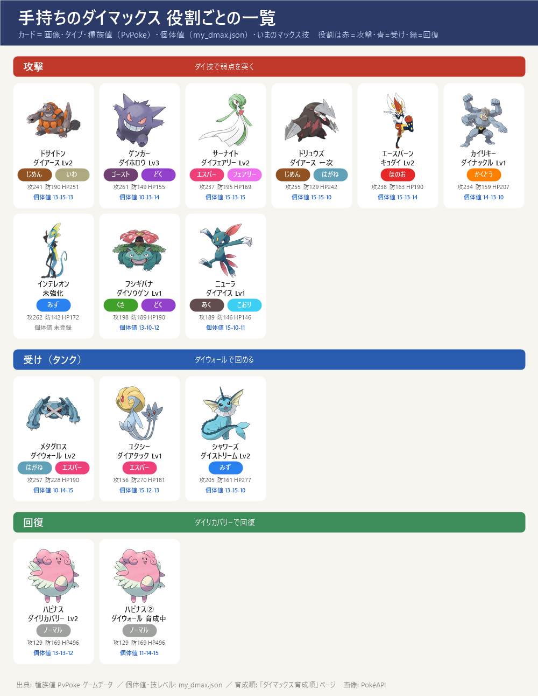

- 手持ちのダイマックスポケモンの一覧。種族値（攻撃・防御・HP）は PvPoke のゲームデータ、個体値は記録（my_dmax.json）から「15-12-13」の形で表示。記録がないものは「個体値 未登録」
- 役割：攻撃（赤）・受け（タンク）（青）・回復（緑）。カードは名前の下にいまのマックス技とレベル、その下に種族値・個体値
- 育成プランは下の節と「ダイマックス育成順」ページで同じ（次に上げる技とレベル・必要MP・優先順位）
- 個体値を記録済み：メタグロス・ユクシー・ハピナス・ドサイドン・ドリュウズ・ゲンガー・サーナイト・フシギバナ・シャワーズ・カイリキー・エースバーン・ハピナス(2体目)・ニューラ。ほかは未登録
- ※ザシアン・ザマゼンタはダイマックスではないので、この一覧には入れていない（育成順ページに別記）
役割ごとの一覧

育成プラン（育成順ページと同じ）
- ドサイドン（個体値 13-15-13）：3位・攻撃（CP3005）：ダイアース Lv2 済み（10/24）（どろかけ替え済み）。ディアルガ・レジスチル・★6キョダイジュラルドンで弱点。1発272（Lv3は318・アメXL要で後回し）
- ゲンガー（個体値 10-13-14）：4位・攻撃（CP2500）：ダイホロウ（ダイアタック）Lv3 済み（10/23）。10/24 ユクシー・エムリット・アグノム、11/13 ラティアス・ラティオスで弱点
- サーナイト（個体値 15-13-15）：5位・攻撃（CP2023・15-13-15）：ダイフェアリー Lv2 済み（10/24）。あまえる替え済み。パルキア・レジドラゴ・ラティアス／ラティオス・10/26 ヤミラミの攻撃役。次の強化はドリュウズのダイアース Lv2 へ
- ドリュウズ（個体値 15-15-10）：6位・攻撃/受け（CP1835・15-15-10・PL20）：次の強化はここから。ダイアース Lv1 済み → Lv2（600MP）。順番：Lv2 → PL30 → 和田堀の巣でアメXLを集めて Lv3（アメ187）。ディアルガの技（ドラゴン・はがね・でんき）を全部半減以下で受けられる2体目のじめん役 → 11/9〜13 に
- エースバーン（個体値 15-13-14）：後回し・攻撃（CP2566・15-13-14・キョダイマックス）：キョダイカキュウ Lv2 済み（ダイウォール・ダイリカバリーは未開放）。Lv3 はアメXL 45個。レジスチル（ほのお弱点で1発278）・ヤミラミ・★6キョダイジュラルドンで活躍
- カイリキー（個体値 14-13-10）：後回し・攻撃（CP1698・14-13-10）：ダイナックル Lv1・ダイウォール未開放・ダイリカバリー未開放（2026-10-26 登録）。かくとうでレジスチル・ディアルガに弱点を突けるが CP が低い。じめん・かくとう役はドサイドンが先 → 育成は後回し
- インテレオン（個体値 未登録）：後回し・攻撃（CP2315）：ダイマックス版はどの攻略サイトでも下位
- フシギバナ（個体値 13-10-12）：後回し・攻撃（CP2000・13-10-12）：ダイソウゲン Lv1・ダイリカバリー Lv1。ダイマックス版はどの攻略サイトでも下位
- ニューラ（個体値 15-10-11）：後回し・攻撃候補（CP1139・15-10-11）：10/19 捕獲・ダイアイス Lv1（ほかは未解放）。マニューラへの進化はアメ100（今76・あと24）、シンオウのいしあり。技より進化を先に → 進化後 CP約1,680 でダイアイスがレジドラゴ・ラティアス/ラティオスに2倍
- メタグロス（個体値 10-14-15）：2位・受け（CP3369）：ダイウォール Lv2 済み（10/24・盾40）。6ボスすべてで受け役。Lv3（盾60）はアメXL が要るので当面このまま
- ユクシー（個体値 15-12-13）：後回し・受け候補（15-12-13・技Lv1）：10/24 捕獲。防御がとても高い(270)エスパー単。ダイアタック Lv1 のみでダイウォール未習得 → 覚えれば受け（タンク）の2体目候補。今のドラゴン・はがね系ボスには等倍なので受け役の比較にはまだ入れていない
- シャワーズ（個体値 13-15-10）：受け（パルキア戦・CP1704・13-15-10）：ダイストリーム Lv2・ダイリカバリー Lv1・ダイウォール未開放。だいもんじ・ハイドロポンプ・アクアテールをいまひとつで受けられHPも多い → パルキア戦の受け役（手元で確認済み・使える状態）
- ハピナス（個体値 13-13-12）：1位・回復（CP2677・13-13-12）：ダイリカバリー Lv2 済み（10/21）。6ボスすべてで回復役（回復量 31→47・4体全員に）。ダイウォール Lv1 も覚えており、HP がとても多いので受け（盾）の候補にもなる（ボス別ページの受け役ランキングでも上位）。次はダイウォール Lv2
- ハピナス(2体目)（個体値 11-14-15）：後回し・回復（2体目・11-14-15・PL20）：PL40・ダイウォール Lv3 を目指して育成中。余裕ができたら2体目の回復役・受けに
出典: 種族値: PvPoke ゲームデータ ／ 個体値・技レベル・CP: my_dmax.json ／ 育成の優先順位・MP: 「ダイマックス育成順」ページ（GO Hub・Dittobase・ドクターポケゴーゴー）
画像: PokéAPI ／ 更新 2026-10-26